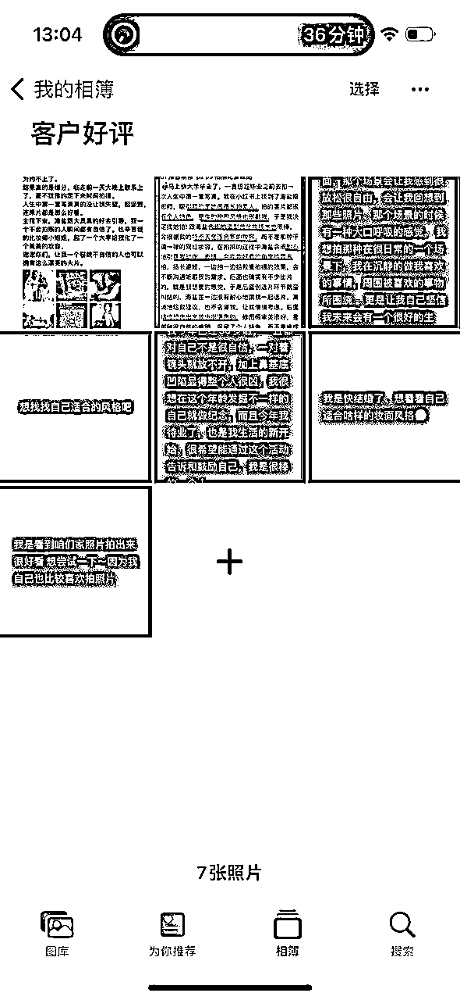
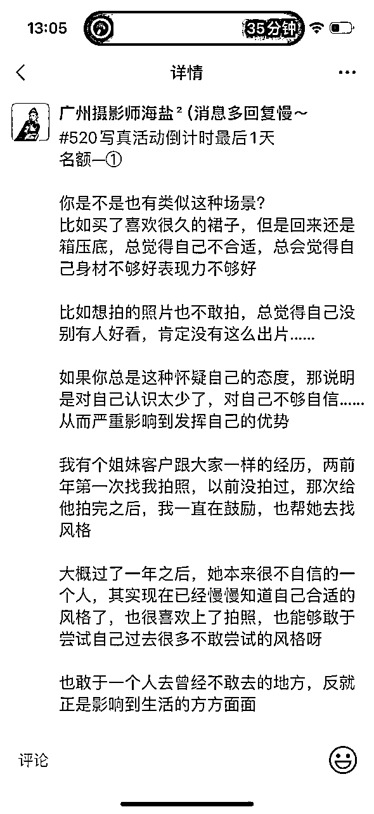

来源：https://dqez6wornz.feishu.cn/docx/IMoCdochPogHeJxLB1WcD93Xn8e
我利用520的节点，一周18,000+营业额，这次拆解手艺人如何利用节日成交，这次的520活动挺有意思的，所以想给大家重现下，希望对手艺人有一些帮助
如果你是这种情况
……
如果你有以上情景话，可以看看我的思路和解决方案
个人背景：
我是一个在广州的独立摄影师，目前没有自己工作室的，有合作的工作室.
合作的意思用了才有消耗才有成本
引流获客，转化成交，摄影交付，目前是自己在做，当然重复性非专业的事情在外包（比如修图 化妆 助理 社群运营 ）
后续今年的想法是自己主要做前端引流，后续成交和交付的全部找专业的人合作，这样子才能更好的方放大，也能够更好地发挥自己的优势
本次活动目的：
01提升成交效率
批量发售最大的好处就是添加短期之内获得一两个月的订单量，这样接下来就不用老是发愁了，也能够把更重要的精力放在更重要的事情上
02保证现金流
摄影可以重资本，也可以轻资本做的事情，发售就是拿客户的钱去做发展
03定时收单
用户的需求是可以被激发的，我们做活动的目的是为了定时把种子，用户收进来，以此达到更好的正向循环的作用
本次数据情况：
人数：13位
总金额：18187
接下来分6个部分介绍，每个阶段遇到不同的卡点，但是只要解决了活动前的卡点，后面的问题都会迎刃而解
(核心确定销售产品和海报，选好产品和海报，成功一半)
很多人做活动不清楚到底要卖什么，或者说自己有很多的产品，不知道怎么选择合适卖的东西，还有一些人多个项目同时卖，但什么都没卖出……这也是我曾经多次遇到的问题
所以我们想要成交率提上去，一定要清楚自己到底要卖什么东西，这个要非常的明确，只有这样，我们的销售额才有可能更好地提升，尤其是一个人没有团队的手艺人
接下来我给大家分享一下，我自己的选择产品的思路
比如说我自己是个摄影师，我其实也有很多的产品，但每个产品里面又有多个不同价位的服务，但是我的选择标准主要有2个
第一，你的爆款
通俗来说就是客户选择最多的项目，你90%的客户首选的，那就可以做为你本次销售的主要产品
我这次选择的是A套餐，因为我80%的客户都是选择这个
第二，价格适中
价格可以选择用引流款，也可以选择用利润款，不太建议用你的高利润的款，因为高利润的款比较难卖
越是低价，相对越好卖，越是高价，相对越难卖
我这一次选择的是，标准利润款，我为什么没有选择引流款，因为我去年中秋的时候做过一次引流款了，所以这次就不做了，下次可能会做引流款，总之结合不同的时机，穿插的不同的款式相互做
海报非常非常非常重要！海报选的不好成交率会大打折扣，所以海报一定要下心思！
要思考主要三个海报核心
比如
……
这三个点是，我们要在海报上面主要呈现出来的
1-如何包装性价比？
比如说，我这个520的套餐价格1399的，平时原价是1599，如果写原价是1599，现在是1399那就没有什么诱惑力，所以我就把它重新包装了一下
我就在福利二和福利三，分别增加了30秒视频花絮，还有六张底片，因为平时我的套餐都没有底片的，同时写清楚每个福利价值多少多少，让别人觉得很赚的感觉
2-别人为什么要选择你？
这个主要跟平时的朋友圈营销有关系，海报很难马上解决，所以平时的营业也很重要，但是可以呈现一小部分，比如说，现在的价格和之前的价格有什么区别？
比如说，现在的价格和之前的价格有什么区别像我就写了，现在的价格是1399，后面的价格是 2697
3-为什么要马上选择你？
这个主要是呈现截止日期，在多少天之前是这个价格？在多少天之后是另外一个价格？
学习逆人性，生意顺人性，人都有羊群效应，哪里热闹就喜欢凑热闹，如果一个地方很冷淡，那只会越来越冷淡，如果一个地方很热闹，那只会越来越热闹
所以我们要自己学会制造假象，也就是说刚开始你需要自己先用你的小号或者你的朋友，在活动刚发售后，先用先自己模拟四个左右的虚拟咨询和订单截图，这样可以更好地促进成交。
就像是一个新店刚开始开业，可能会找一些人来排队度过第一个阶段的冷启动，这都是非常正常的现象
都说卖产品就是卖海报卖图片，所以我们要提前准备好所有用到的素材
比如我是个摄影师，所以我需要准备的主要如下
1-客户拍照前后对比
所有的对比无非就是想要激发用户的需求感，代入感，认同感，从而激发用户的购买欲，所以一定要利用好自己的产品对比图，我平时是拍照为主，所以呈现大部分对比图都是客户拍照前后的对比图
2-客户反馈
商家和用户永远都是站在对立面的，用户更会相信用户的反馈，而不是商家，所以我们要用户我们要利用好用户证言。
就像我们去买东西的比较贵的时候，我们会会买买过的朋友的意见，而不是直接去问商家

3-订单截图
这一步主要是证明有人找你下单，也可以制造用户的从众效应
以下是我的晒单参考
4-客户常见Q&A
这一步主要是解决用户的顾虑。
需要把客户常见的问题把它罗列出来，并且给到解决的方案，然后进行发圈，因为常见问题发出去，意味着你一次发圈同时解决很多人的问题，也可以在一定程度上解决客户的顾虑
比如我的这个

5-人设故事
这个主要是加深和积累对你的信任，所有的成交基于信任，没有信任就不会有成交。所以人设故事的目的是让已经认识你的人，更好地了解你，让不认识你的人初步了解你。
人生故事可以围绕着你的成长经历➕你的职业的一些周折➕你的产品，就有点像好莱坞电影，刚开始都是比较曲折，最后怎么找到自己的人生使命或者梦想，最后在附加一些你的产品就好了，框架差不多这样
6-作品合集
把你的爆款作品多次做成合集，把它多次发出来，爆款之所以成为爆款，肯定是因为满足大部分的需求，所以爆款可以多次发重复发反复发，换着不同的汤和药去发
7-做好发圈SOP
SOP为了提升发圈效率，以上的可以做成表格SOP，到时候定好闹钟，到点就发。这样子可以避免一些人为因素而影响的发圈效率
朋友圈每个地方都是广告位，细节做得越到位，你的成交效率也会更高，沟通成本也会降低，我为了提升我的沟通效率，我做了四个细节
01优化微信名字
名字后面改成你的活动进行时
02优化朋友圈背景
可以在你的背景图后面改成现在是什么活动？什么价格？
03优化微信拍一拍
可以把你的拍一拍改成你的活动时间

04优化朋友圈简介
（核心是被看见和成交，成交的前提先看见）
平时只要做好一个点，在活动的时候就可以增加被看到的可能性，这个是我这次做活动无意发现的
我平时发作品都习惯性会让用户点赞，然后发幸运小红包，这个好处就是在你下一次做活动的时候可以去植入你的广告
比如可以在这条朋友圈留下你这次的活动力度和卖点，而这条朋友圈可以反复提醒点赞的人
比如我的这个
我们经常有收到各种各样的群发，有些会让人很反感，有些让人看了马上就想拉黑，有些看着却很舒服，有啥区别？
让人反感的基本就是比较索取的状态，强行推销，没有站在用户的角度思考，比如这个
销冠群发技巧 | 激活客户黄金话术
01采用好奇吸引法
如：仅仅让朋友给客户发了一段话，客户就给她付了8000块，你想知道是什么话嘛？回复6，我告诉你。
（利用能带给客户想要的好处充分激活客户）
02占便宜心理
免费给你xx课件，要不？
03拾高対方身价，引好感
你好，你是我的一类好友。
有最新的、好的资讯我会第一时间通知我的一类好友，为期5天的xx干货群明晚上又要开奖了，我的一类好友可以获得免费学习机会，每期都有新内容增加，还是老规矩，进群后禁广告、私聊加人、刷屏等，违者请出群，可用文字分享交流学习心得！
违规再也没有第二次的进群机会，回复“学习”！我告诉你免费进群的方法。
我用的是第三个，以下是我的案例

成交之前，要知道成交主要涉及的因素有哪些？只有知道成交因子，才可以更好地转化
我自己总结有主要有三个
第一，需求挖掘
一上来问你各种问题的，首先你不要被他带着跑，你要清楚地知道他的需求，很多人不知道自己的需求，那你就要引导他明确自己的需求
我一般是先咨询客户想拍的风格，为什么要拍是因为什么原因？过去拍照什么顾虑？这次拍照想达到什么样子的目的或者预期？
了解这些基础后，再给他推荐合适风格，这个就是我对客户需求的挖掘，以下是我的部分聊天记录，可以参考
第二，解决顾虑
当你给他明确的需求之后，有些可能会产生一些顾虑，所以你要针对不同的顾虑，给不同的方案来抵消他的顾虑
第三，给成交理由
当以上的顾虑和需求的解决之后，就给他一个成交的理由，这次成交理由就是你做活动的主要目的
高成交的单一定是要结合场景的
你要帮助用户去想清楚，他买这个东西有什么用？用在哪些地方？
比如说摄影这块，他为什么拍照？更多是一个重要时间节点的记录，比如说生日呀，纪念日这种，那这个时候我们的文案就可以结合他们购买的场景
比如我的
（核心解决持续成交，让人有紧迫感）
前面一到五天，每天晒单两次左右就可以了，但是在活动后最后两天，晒单一定要勤快，至少要四次以上！担心被屏蔽的，你可以偶尔隐蔽一些时间距离比较近的晒单就好了
因为前面的所有铺垫，就是为了这一刻，这一刻一定要一定要一定要疯狂晒单，但是不是那种纯硬广，你要植入一些有对用户有价值的东西，比如
主要在我们的每条朋友圈的软广和硬广下留言，你本次的活动力度和截止时间，还有我们平时赞比较多的朋友圈反复留言


利用好我们提前编辑好不同时间段的群发内容，用不同的内容去在不同的时间段发
群发是因为朋友圈很多都看不到了，只有朋友圈和群发以及社群同时运营情况下，才能够被更多人看到，只有持续被看到，才能够增加更多成交的可能性
以下是我的倒数第二天以及最后一天的群发
（倒数第二天）
（最后第1天）
我们跟单主要就目的就是成交，成交之前要确定解决跟单的高意向客户，怎么判断是高意向的？
裂变和成交最好是分开做，如果经历 经验允许的情况下就可以同时做
因为两个机制我觉得是不同的模式运营的，建议分开会比较好，像我这次主要是做成交，那下次主要就是做裂变曝光
只要按照我们上面那个群发机制标准去整理你的话术就被降低反感的概率
一般建议是5-8天，太短不起效果，太长又会消除耐性什么的，所以建议是一周左右比较好
平时可以收集一下比较海盗好的海报，可以多分析好的海报为什么会吸引你？可以反向思考
如果不会做就可以找人帮你做就好了，你只要把你的核心东西就可以了，比如说你的海报上面要呈现的主要三个点，一定要用文字形式呈现出来给到你的设计师
做活动担心被屏蔽怎么办？可以再开始做活动之前先预告，你可以发朋友圈，然后建一个不看活动的主，让他们留言6，留言的你就把他们拉到一个看不见活动的组就好了
当然这个看个人心理素质吧，我这个人不太担心别人怎么看，所以我没做这个步骤
我这次做活动发现一个新玩法，有个摄影同行，他把同城的一些异业整合联动，增➕被同城的意向客户看见被曝光的的可能
大概思路就是集齐了咖啡行业 宠物行业，美业等多主理人，一起去做抽奖，每个行业把自己的核心产品做一个免费的抽奖，然后各自引导进群加微信，这样可以相互导流裂变，这个裂变玩法下次我也试试
这次主要是纯成交比较多，没有增加什么裂变环节，所以可能需要在后面做完服务之后，及时的去做裂变，这次没有做，主要是考虑到精力不够，所以想着下一次专门去做裂变也行
我们都知道农村伯伯种稻谷是经历从播种，修理，最后收割的阶段
我们做生意也是一样的，不仅要播种修理，也一定要及时的去转化收单
因为用户的需求，他迟早都是要被满足的，他不在你这满足也会在别人哪里满足，那既然这样子，你为何不及时去收割呢，所以我们一定要摆正心态
本来想做社群的，但是因为精力不够，所以就没有做，如果社群做的话，可以从这些方面下手
比如说做一个进群免费咨询免费诊断拍照风格的快闪群，每天有多少个名额？对方需要提供什么物料给你你，然后你可以在群里面做直播或者群文字或者语音分享都可以，也算是一次一对多的机会
哪怕没成交，但是会给他种下一个种子，然后这个种子一定会在某一天开花
做事情永远不要抱着这个东西很难，我就不去做了，而是想着这个东西难难在哪里，我要怎么去解决，把问题细化拆分，找解决方案，而不是退缩
因为做什么都退缩的话，那你就永远停留在原地，永远抱着这件事情，可以学到东西的心态去做，那你就会很容易的你想要的
这个活动其实拖了挺久了，大概一个月，原因是我觉得这件事情感觉好难，加上也不是那么的缺钱，觉得做活动有点丢脸
后面当我反过来思考的时候，我觉得我需要钱，同时我需要在这件事情上做一些增长，因为你只有经历事情才有分享的动力和欲望
我想清楚了这点之后我就开始去做了，所以有时候你觉得你拖延，可以试着想象一下我们这个成之后的画面是什么样子，把它具体化，你就有源源不断地地动力
而是你可以理解成一年四季，种田你需要经历播种 去杂，加肥料，最后收割
我们赚钱也是一样的，我们前面也在不停地播种去凿加肥料活动，只不过是我们收割的环节
咋就是说格局打开~
我每一次做完活动做完一件事情，我都会把它复盘总结，然后分享出去，这个举动开帮助够更多有需要的人，同时也在理清自己的思维帮助自己看清一些关键环节，这些将会是就是你未来遇到问题的时候，很快速找到解决方案的养料
以上呢
就是我本次活动的复盘分享，希望对友需要的人有帮助，大家有活动的问题可以来问我喔，能回答的都会回答，最后谢谢大家的耐心观看！